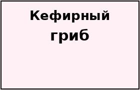

Полученный с его помощью кефир является уникальным лечебным продуктом. Его употребление нормализует кишечную микрофлору и оказывает общее оздоровительное действие.
Настой тибетского молочного гриба употребляют после еды. В этой учебной странице главное — работа текста и изображения.